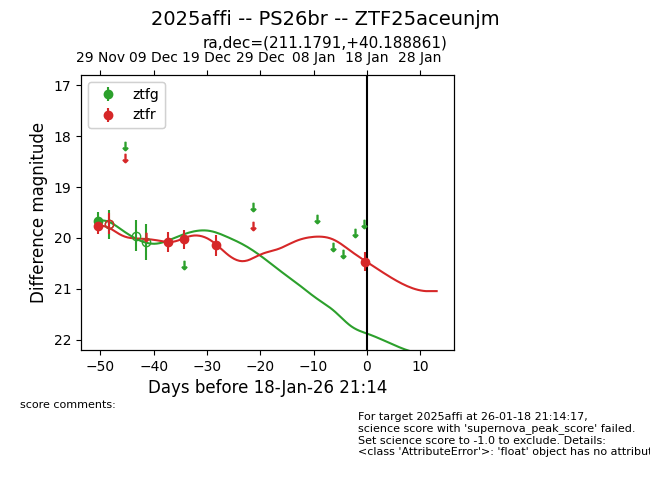
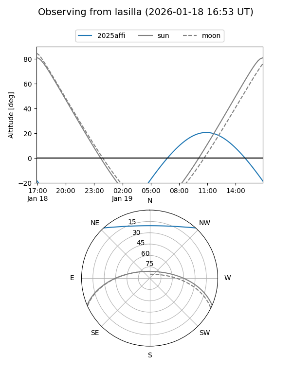
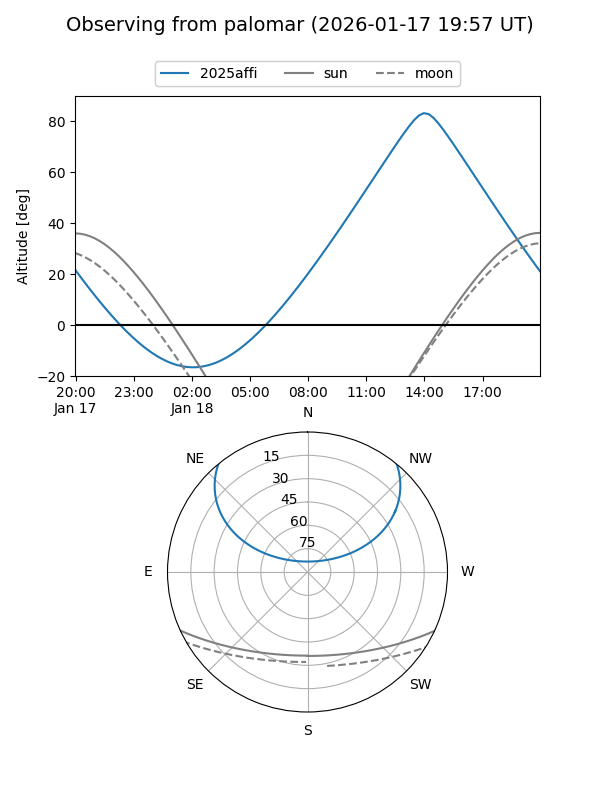
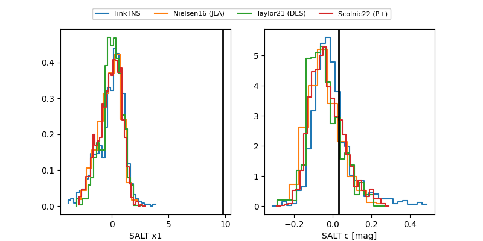

2025affi
Target 2025affi at 2025-12-24 16:17
Aliases and brokers:
FINK: fink-portal.org/ZTF25aceunjm
Lasair: lasair-ztf.lsst.ac.uk/objects/ZTF25aceunjm
ALeRCE: alerce.online/object/ZTF25aceunjm
TNS: wis-tns.org/object/2025affi
YSE: ziggy.ucolick.org/yse/transient_detail/2025affi
alt names
ZTF25aceunjm (ztf,fink_ztf)
2025affi (tns,yse)
Coordinates:
equatorial (ra, dec) = 211.1791,+40.18882
equatorial (HMS+DMS) = 14:04:42.98,+40:11:19.74
galactic (l, b) = (78.3490,+69.99686)
Flags:
Photometry:
last ztfg=19.67, ztfr=20.15
1 ztfg, 4 ztfr detections
Lightcurve

Visibility


Additional plots
